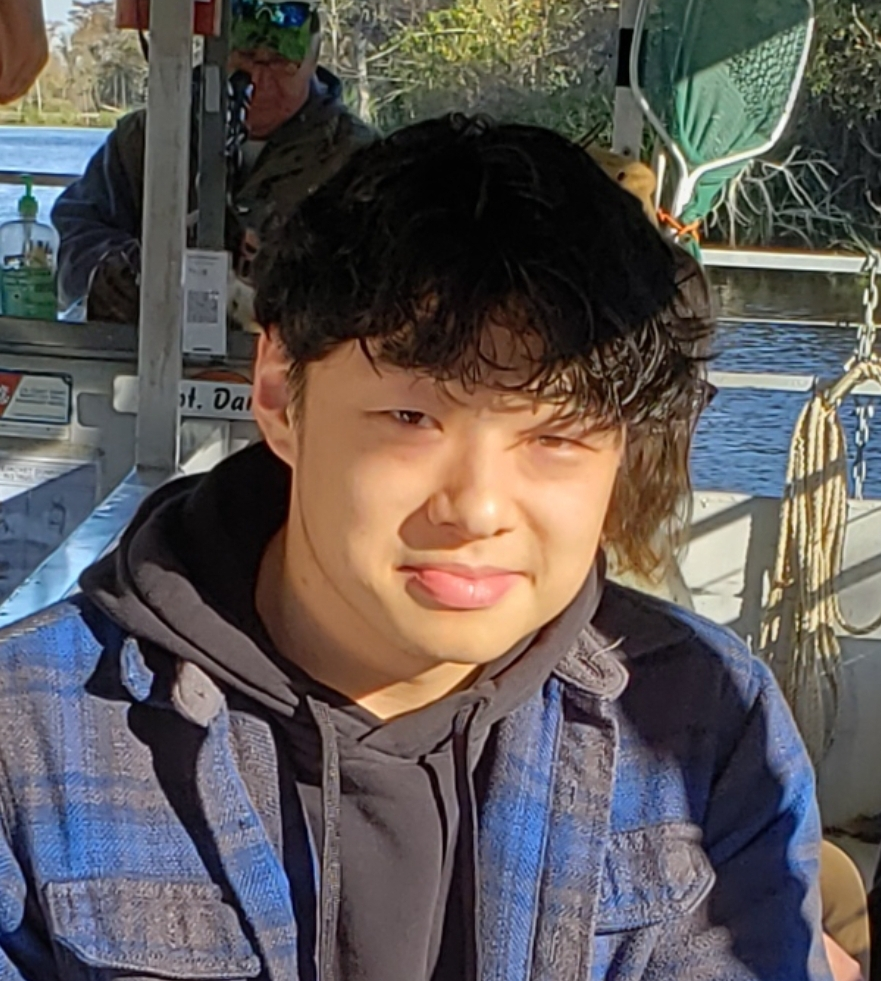

M.S. in Computer Engineering
Texas A&M University
Computer Engineering Systems Group
Advisor: Paul Gratz
Email: tiaguo@tamu.edu
Resume (PDF)
Hi, I'm Tianfang Guo. I received my Bachelor's degree from UT Austin, where I studied Electrical and Computer Engineering with a focus on Computer Architecture and Embedded Systems.
My primary interest is computer architecture. I'm currently in the Computer Engineering Systems Group at TAMU, and my advisor is Paul Gratz.
I could write about all the technical details of my internships, but that's what my resume is for. I think it's more interesting to talk about other things I've learned during my time in the industry.
My gig at Texas Instruments was my first ever internship. Thus, I was actually woefully prepared for it. But as it turns out, not much is actually expected of a college sophomore.
I learned a multitude of things that summer, not the least of which was that Dallas people don't know how to drive. The true rigidness of a corporate job was also somewhat gently instilled within me. I learned about deadlines, sprints, how badly internal tools are documented; but perhaps most importantly, I learned how to survive this jungle.
Second times the charm; DV at Qualcomm! This was a big boy internship. I was ready to get things done, network, and conquer the world. What I was actually met with was a mostly empty office, a natural consequence of a 3 day WFH schedule. This desolation of course doesn't speak to the technical rigor of the internship, but perhaps resulted in me working with more independence than I would have liked.
Incidentally, this was also the summer I truly fell in love with Austin. I was at a somewhat tumultuous time in my life, and with relatively more free time on hand compared to during the semester, I turned to exploring the city, which kept me grounded.
I accepted a gig with Arm for this summer. Unbeknownst to me at the time, this is located in San Diego. Therefore I shall soon make the pilgrimage to California, the state of controversies. Perhaps I will remember to update this page afterwards, when I need to find a real job.
My research is in hardware prefetching and computer architecture. I am relatively far away (although not so much so) from something of a completed manuscript for my thesis, so here is a collection of thoughts that provide a general direction for my intents.
A way to quantify prefetching is to compare existing hardware prefetchers to some magical oracle prefetcher. You can do this by analyzing the specific prefetch streams generated by said prefetchers. When you compare these streams, you can generally separate them into four sets:
It is easy to separate Sets 1, 2, and 3+4, but it's much harder to separate Set 3 from Set 4, which is the set we really care about, since Set 3 contains hard-to-make prefetches that can guide future prefetcher design.
The first-order concern is to actually create motivation to do this research. That is, is Set 3+4 actually large enough to justify putting effort into discovering its contents? There are multiple ways to do this, none of which seem (at least to me) particularly more correct than the others. The main point here is to quantify the difference between oracle streams and other prefetcher streams.
One way to do this is via compression, as a proxy for finding the Kolmogorov complexity of the streams. If you can compress a file well, it means there is less entropy in the file. I should add that the point of needing to calculate the entropy/k-complexity is that if a stream has a high amount of entropy, then it is naturally unpredictable. If the oracle stream had high entropy, it would mean the oracle is making seemingly random or unpredictable decisions on what to prefetch using its prescient information. However, according to my data so far, this is not the case—the oracle stream generally has one of the lower entropies across many benchmarks. This means the oracle is actually making relatively more patterned decisions than existing prefetchers. I am currently at this stage, which is to say mainly data collection and analysis.
Next comes the much harder part of actually separating Set 3 from Set 4. Again, there are multiple ways to do this:
Ultimately, I suspect what's going to happen is some combination of multiple of these methods (conservatively) acting as filters that generates some subset of Set 3.
| Advanced Computer Architecture | Prof. Paul Gratz |
| Special Topics on Branch Prediction | Prof. Daniel Jimenez |
| Parallel Computing | Dr. Vivek Sarin |
| Intro to Hardware DV | Dr. David Kebo Houngninou |
| Deep Learning and LLMs | Dr. Tomer Joseph Galanti |
| Hardware Architecture for Machine Learning | Dr. Lizy John |
| Requirements Engineering | Dr. Suzanne Barber |
| UT SEEK |
| Operating Systems | Dr. Ramesh Yeraballi |
| Digital System Design w/ HDL | Dr. Lizy John |
| UT SEEK |
| Compilers | Dr. Mattan Erez |
| Algorithms | Dr. Pedro Santacruz |
| Honors Senior Design II | Dr. Frank Register |
| UT SEEK |
| Computer Architecture | Dr. Mattan Erez |
| Digital Logic Design | Dr. Nur Touba |
| Honors Senior Design I | Dr. Frank Register |
| Public Communication of Science and Technology | Online |
| Probabilities and Random Processes | Dr. Gustavo de Veciana |
| Engineering Communications | Dr. Bill Fagelson |
| Embedded Systems Design Lab | Dr. Jon Valvano |
| True Crime Podcasts | Dr. Robert Quigley |
| Federal Government | Online |
| Software Implementation I | Dr. Valleth Nandakumar |
| Linear Systems and Signals | Dr. Jon Tamir |
| Linear Algebra | Dr. Arie Israel |
| Gems and Minerals | Dr. Elizabeth Catlos |
| World Literature | Online |
| Intro to Embedded Systems | Dr. Lucas Holt |
| Circuit Theory | Dr. Earl Schwarzlander |
| Differential Equations | Dr. Charles Mills |
| Intro to Classical Methology | Online |
| Intro to Electrical Engineering | Dr. Edward Yu |
| Intro to Computing | Dr. Yale Patt |
| Calculus | Dr. Theresa Martines |
| American Musicals | Dr. Hannah Lewis |
| Federal Government | |
| Macroeconomics | |
| US History | |
| Intro to Computers | |
| Physics | |
| Calculus | |
| Composition/Rhetoric |